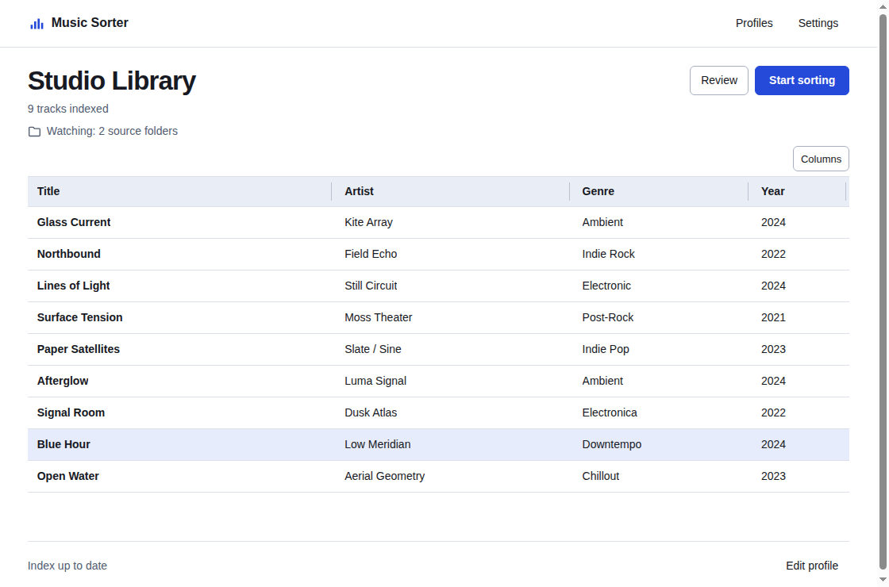
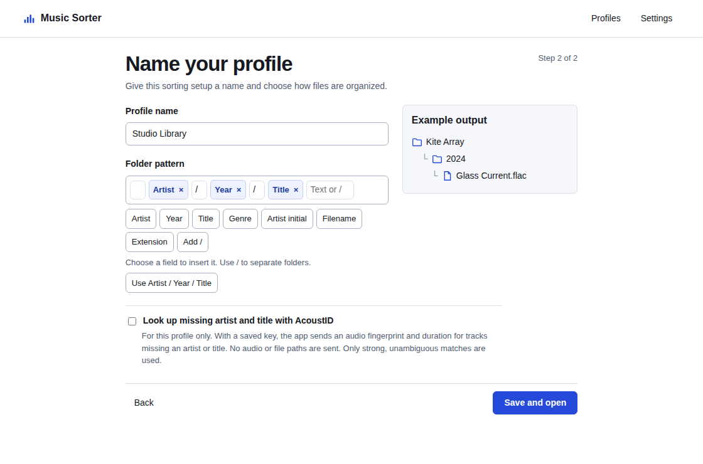

Your music,
in order.
Index a music library, choose where each track belongs, and copy it into a new folder structure. Your originals stay exactly where they are.
See how it works
How it works
-
Choose your folders
Add one or more inputs and one separate output.
-
Set the naming pattern
Save a profile with the folder layout you want.
{artistInitial}/{artist}/{title} -
Start sorting
Open the live index, preview the copy plan and check variants or conflicts, then start sorting.

Byte-identical files are skipped. Different files with the same artist and title are kept separately. Audio fingerprint matches are suggestions, not a reason to discard a file.
Builds
Music Sorter 0.3.0 is available for Windows x64, macOS (Apple Silicon and Intel), and Linux x64. The desktop app follows your system language for English, German, Spanish, and French, with English as its fallback.